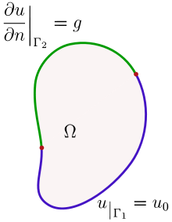

(r) Uniqueness of Poisson's equation
1. Poisson’s equation
포아송 방정식은 아래와 같이 표현할 수 있다. 라플라스 방정식은 f=0 일 때를 의미한다.
$$ \nabla^2\varphi\left(\vec{r}\right)=f\left(\vec{r}\right) $$2. Weak solution for Poisson’s equation
포아송 방정식에 대한 해를, $\varphi_1$, $\varphi_2$ 하고, 두 해의 차이를 $\psi=\varphi_1-\varphi_2$ 라고 하자. 이를 포아송 방정식에 대입하면, 다음과 같다.
$$ \nabla^2\psi\left(\vec{r}\right)=0 $$$\psi$가 0임을 보인다면, 해는 유일하다. “약해가 유일하다면, 만약 그 문제에 강해가 존재한다면, 그 강해는 유일한 약해와 같아야 한다.
$$ \int d^3V \left\lbrack\psi^\ast\nabla^2\psi\right\rbrack=0 $$$$ \int d^3V \left\lbrack\psi^\ast\nabla^2\psi\right\rbrack=\int d^2\vec{s}\cdot\left\lbrack \psi^\ast\nabla\psi\right\rbrack-\int d^3V\left\lbrack \nabla\psi^\ast\cdot\nabla\psi\right\rbrack $$$$ \int d^2\vec{s}\cdot\left\lbrack \psi^\ast\nabla\psi\right\rbrack-\int d^3V\left|\nabla\psi\right|^2=0 $$3. Dirichlet boundary condition
경계면에서, 값은 이미 정해져 있으므로,
$$ \psi_S=\varphi_{1S}-\varphi_{2S}=0\implies\int d^2\vec{s}\cdot\left\lbrack \psi^\ast\nabla\psi\right\rbrack=0 $$$$ \int d^3V \left|\nabla\psi\right|^2=0 $$따라서,
$$ \nabla\psi=0 $$디레클레 조건의 경계면에서도 만족하려면,
$$ \psi=0 $$ℹ️ 위 증명을 이용하면, 이상적인 금속 내부의 전계가 0인 이유를 알 수 있다.
4. Neumann boundary condition
경계면에서,
$$ \hat{n}\cdot\nabla\varphi_1=\hat{n}\cdot\nabla\varphi_2 $$$$ \hat{n}\cdot\nabla\psi_S=0\implies\int d^2\vec{s}\cdot\left\lbrack \psi^\ast\nabla\psi\right\rbrack=0 $$$$ \int d^3V \left|\nabla\psi\right|^2=0 $$따라서,
$$ \nabla\psi=0\implies\psi = C $$C는 여러 값을 가질 수 있으므로, 해는 유일하지 않다.
ℹ️ 전자기학에서 potential 은 유일하지 않을 수 있다. 이를 gauge invariance 라고 한다. 그러나, potential 의 gradient는 유일하므로, 전기장은 유일한 값을 가진다.
5. Mixed boundary condition

$$ \psi_{\Gamma_1}=\varphi_{1,\Gamma_1}-\varphi_{2,\Gamma_1}=0 $$$$ \hat{n}\cdot\nabla\varphi_{1,\Gamma_2}=\hat{n}\cdot\nabla\varphi_{2,\Gamma_2}\implies\hat{n}\cdot\nabla\psi_{\Gamma_2}=0 $$이것은 다음을 의미한다.
$$ \int d^2\vec{s}\cdot\left\lbrack \psi^\ast\nabla\psi\right\rbrack=0 $$$$ \int d^3V \left|\nabla\psi\right|^2=0 $$노이만 경계조건 뿐만아니라, 디레클레 경계조건도 만족해야 하므로,
$$ \psi=0 $$따라서, 해는 유일하다.